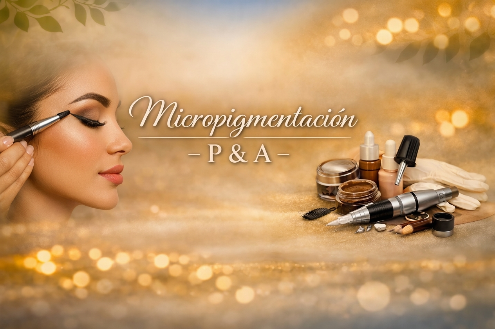

Micropigmentación

Beneficios
Cejas definidas, simétricas y de larga duración. Permite corregir asimetrías, rellenar espacios y lograr un resultado natural que se mantiene en el tiempo, simplificando tu rutina diaria.
Técnica
Realizamos un diagnóstico profesional de la piel y el rostro para elegir la técnica adecuada. Nos especializamos en sombreado con esfumado controlado (efecto powder), logrando una implantación precisa del pigmento y un acabado prolijo, armónico y seguro.
Micropigmentación Cejas
🕐 Duración: 2 horas.
💰 Valor: $199.000 en efectivo - Seña: $50.000 o $270.000 en tarjeta (3 cuotas sin interés)
Transformá tus cejas con la técnica de micropigmentación que nos caracteriza: shading, efecto powder u ombré, con un esfumado controlado que se adapta 100% a tu rostro y estilo.
Diseño personalizado, pigmentos de calidad y la mano experta de nuestro equipo para que salgas con cejas definidas, naturales y que no requieran maquillaje diario.
El precio corresponde a pago en contado efectivo. Si pagás con transferencia, tarjeta de débito, crédito y Gocuotas el servicio tiene un valor diferente.
Antes de tu cita, tené en cuenta:
- Recibirás un recordatorio 24 hs antes que deberás confirmar. ✅
- Tolerancia de espera: 10 minutos.
- El espacio es exclusivo para vos — sin acompañantes, por favor.
- No consumir alcohol ni café 24 hs antes.
- No tomar aspirinas ni anticoagulantes sin indicación médica.
- Venir sin maquillaje en la zona de cejas.
- Si tenés algún tratamiento de piel reciente (peeling, botox en zona), contanos antes de agendar.
- La seña no congela el precio, que puede estar sujeto a cambios.
- La seña se debe abonar dentro de la hora de reservado el turno, caso contrario el turno se libera automáticamente.
Micropigmentación Labios | Full Lips / Acuarela Lips
🕐 Duración: 2 horas.
💰 Valor: $190.000 en efectivo - Seña: $40.000.
Técnica de micropigmentación que aporta color, definición y mayor uniformidad al labio, logrando un efecto natural y armonioso. Ideal para realzar el tono, corregir pequeñas asimetrías y dar una apariencia más fresca y saludable.
Antes de tu cita, tené en cuenta:
- Recibirás un recordatorio 24 hs antes que deberás confirmar. ✅
- Tolerancia de espera: 10 minutos.
- El espacio es exclusivo para vos — sin acompañantes, por favor.
- La seña no congela el precio, que puede estar sujeto a cambios.
- La seña se debe abonar dentro de la hora de reservado el turno, caso contrario el turno se libera automáticamente.
Micropigmentación Labios | Neutralización de Labios
🕐 Duración: 2 horas.
💰 Valor: $180.000 en efectivo - Seña: $40.000.
Tratamiento indicado para labios con tonalidades frías, oscuras o violáceas. Mediante pigmentos correctores se busca equilibrar el color natural del labio para obtener un tono más uniforme y saludable.
Importante: la cantidad de sesiones necesarias dependerá del tono inicial del labio y de la respuesta individual de la piel.
El precio corresponde a pago en contado efectivo. Si pagás con transferencia, tarjeta de débito, crédito y Gocuotas el servicio tiene un valor diferente.
Antes de tu cita, tené en cuenta:
- Recibirás un recordatorio 24 hs antes que deberás confirmar. ✅
- Tolerancia de espera: 10 minutos.
- El espacio es exclusivo para vos — sin acompañantes, por favor.
- La seña no congela el precio, que puede estar sujeto a cambios.
- La seña se debe abonar dentro de la hora de reservado el turno, caso contrario el turno se libera automáticamente.